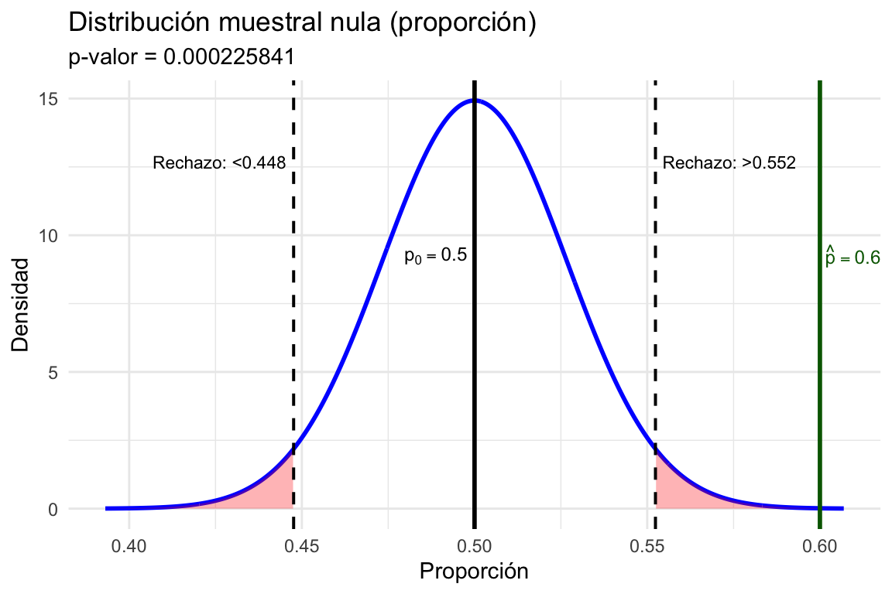

6 Estadística inferencial
Ya hemos visto cómo el Teorema del Límite Central nos ayuda a entender el comportamiento de las medias de múltiples muestras aleatorias. En otras palabras, si extraemos muchas muestras de una población y calculamos sus medias, los valores obtenidos formarán una nueva distribución, conocida como distribución muestral de la media. A medida que aumentamos el número de muestras, esta distribución tenderá a parecerse cada vez más a una distribución normal, sin importar la forma de la distribución original de los datos.
Si bien en el capítulo anterior utilizamos la media muestral como ejemplo, este mismo principio se extiende a otros estadísticos. Por ejemplo, si en lugar de calcular la media de cada muestra calculamos la proporción de individuos con una determinada característica, obtendremos una distribución muestral de proporciones, que también se aproxima a una distribución normal cuando el tamaño de la muestra es suficientemente grande. Del mismo modo, si calculamos la varianza
Entender este concepto es clave para la estadística inferencial, la cual va a ser el tema central de este y los próximos capítulos. En base a lo que conocemos sobre la distribución muestral, podemos aplicar una serie de herramientas que nos ayuden a estimar características de la población.
Puedes interactuar con este concepto en la Datáfora Interactiva: [Click Aquí]
O usa el QR:

Entre los métodos inferenciales que utilizamos están:
Estimación: Nos permite aproximar valores poblacionales desconocidos, como la media o la proporción, basándonos en una muestra (estadístico observado). La estimación esta conformada por un intervalo de confianza, que indica el rango dentro del cual esperamos que se encuentre el valor real de la población (parámetro).
Contraste de hipótesis: Nos permite evaluar afirmaciones o suposiciones sobre la población. Para ello, planteamos una hipótesis inicial (la hipótesis nula) y la comparamos con una hipótesis alternativa. Usamos los datos de nuestra muestra (estadístico observado) para decidir si tenemos evidencia suficiente para rechazar la hipótesis nula en favor de la alternativa.
Ambos métodos aprovechan la idea de la distribución muestral. Gracias al Teorema del Límite Central, sabemos que al recolectar los estadísticos de múltiples muestras estos siguen una distribución aproximadamente normal, bajo ciertas condiciones (Casella y Berger 2024). En este capítulo, exploraremos cómo aplicar estas técnicas para extraer conclusiones sobre una población basándonos en una muestra aleatoria representativa.
6.1 Estimación
La estimación es el proceso mediante el cual intentamos aproximarnos al verdadero valor de un parámetro poblacional, como la media o la proporción, utilizando los estadísticos de una muestra. Dado que rara vez es posible observar a toda la población, la estimación nos permite hacer inferencias sobre sus características con base en una parte representativa de ella, la muestra. Gracias al Teorema del Límite Central, sabemos que, aunque los estadísticos obtenidos en distintas muestras pueden variar, con una muestra suficientemente grande, estos tienden a aproximarse al parámetro poblacional, siguiendo una distribución normal. Esta propiedad es fundamental en la estadística inferencial, ya que nos permite no solo obtener una estimación del parámetro desconocido, sino también medir la incertidumbre asociada a dicha estimación.
Para cuantificar esta incertidumbre, utilizamos el intervalo de confianza, que nos proporciona un rango de valores dentro del cual esperamos que se encuentre el verdadero parámetro poblacional con un cierto nivel de certeza. Para ello, construimos una distribución normal alrededor del estadístico observado. Esta distribución refleja cómo variarían nuestras estimaciones si repitiéramos el muestreo múltiples veces, permitiéndonos delimitar un rango dentro del cual se encuentra el valor real del parámetro.
6.1.1 Estimación y la regla empírica
La estimación es el proceso de construir un intervalo que, a partir de un estadístico calculado en una muestra, nos permite aproximarnos al valor del parámetro poblacional desconocido. Gracias al Teorema del Límite Central (TLC), sabemos que, bajo ciertas condiciones, la distribución de este estadístico tenderá a seguir una distribución normal.
Entonces, utilizando las características de la distribución normal podemos construir intervalos de confianza. En particular, la regla empírica (68-95-99.7) nos dice que aproximadamente el 68%, 95% y 99.7% de los valores de una distribución normal se encuentran dentro de uno, dos o tres desviaciones estándar de la media, respectivamente (5.3). Utilizando esta información, podemos calcular intervalos que reflejen con un grado de confianza el rango en el que es probable que se encuentre el parámetro poblacional.
Habíamos visto que, en la distribución muestral, la desviación estándar se convierte en el error estándar, por lo que debemos calcularlo primero. Su fórmula varía según el tipo de variable y el estadístico que estemos analizando.
Para una media muestral, el error estándar se calcula dividiendo la desviación estándar de la población (\(\sigma\)) entre la raíz cuadrada del tamaño de la muestra (\(n\)):
\[ \text{Error estándar} = \frac{\sigma}{\sqrt{n}}\] donde:
(\(\sigma\)) es la desviación estándar de la población,
(\(n\)) es el tamaño de la muestra.
Recuerda que en la mayoría de los casos no conocemos \(\sigma\), ya que es un parámetro poblacional desconocido, entonces: ¿cómo podemos conocer la desviación estándar de la población si, en realidad, solo tenemos una muestra? Usando la desviación estándar de la muestra (\(s\)) como una aproximación de \(\sigma\).
\[ \text{Error estándar} = \frac{s}{\sqrt{n}} \]
Para una proporción, el error estándar se calcula distinto, ya que aquí estamos midiendo la variabilidad de una proporción (como el porcentaje de personas que apoyan un partido político, el porcentaje de personas con una característica particular, etc.). La fórmula del error estándar para una proporción (\(\hat{p}\)) es:
\[\text{Error estándar} = \sqrt{\frac{\hat{p}(1 - \hat{p})}{n}}\]
donde:
\(\hat{p}\) es la proporción observada en la muestra,
\(n\) es el tamaño de la muestra.
En ambos casos, el error estándar nos indica cuánto esperaríamos que varíe el estadístico muestral (ya sea la media o la proporción de una muestra) respecto al valor real del parámetro poblacional.
Observa como el tamaño de la muestra (\(n\)) aparece en el denominador de ambas fórmula. Esto significa que a medida que la muestra crece, el error estándar disminuye. En términos intuitivos, cuanto más grande sea la muestra, más información tendremos sobre la población, lo que reduce la variabilidad entre las estimaciones obtenidas a partir de diferentes muestras.
6.1.2 Nivel de Confianza y Alfa
Cuando construimos un intervalo de confianza, elegimos un nivel de confianza para indicar cuánta certeza queremos tener de que el intervalo contiene el verdadero valor del parámetro poblacional. Por ejemplo, si elegimos un nivel de confianza del 95%, estamos diciendo que, en el 95% de los casos, el intervalo construido incluirá el valor real de la población si repitiéramos el muestreo muchas veces. El nivel de confianza representa la probabilidad de que el intervalo contenga el verdadero valor.
Al momento de seccionarlo tenemos que ser consciente que existe una relación inversa entre precisión y certeza en los intervalos de confianza. Cuanto mayor sea el nivel de confianza (y, por tanto, nuestra certeza de que el intervalo contiene el verdadero valor), más amplio será el intervalo y menor será la precisión. Esto se debe a que un nivel de confianza alto implica cubrir una mayor porción de la distribución, extendiendo el rango del intervalo para asegurar que se incluya el valor poblacional. Por el contrario, cuando optamos por un nivel de confianza menor (como el 90%), el intervalo se vuelve más estrecho, aumentando la precisión pero con menor certeza de que el intervalo incluya el verdadero valor poblacional.
Esta relación inversa nos obliga a elegir un nivel de confianza que equilibre nuestras necesidades de precisión y certeza según el contexto del análisis. Comúnmente usamos niveles de confianza de:
90% (nos da un poco menos de certeza, con intervalos más estrechos),
95% (el más utilizado, balancea certeza y ancho del intervalo),
99% (mayor certeza, pero con un intervalo más amplio).
Este nivel de confianza se relaciona directamente con alfa (\(\alpha\)), que es el complemento del nivel de confianza. \(\alpha\) representa la probabilidad de error o el riesgo de equivocación que estamos dispuestos a aceptar (ver Tipos de error)
\[ \alpha = 1 - \text{Nivel de Confianza} \]
Por ejemplo:
Si tenemos un nivel de confianza del 95%, entonces \(\alpha = 0.05\).
Si nuestro nivel de confianza es del 90%, entonces \(\alpha = 0.10\).
Si optamos por un nivel de confianza del 99%, entonces \(\alpha = 0.01\).
En el caso de un intervalo de confianza del 95%, \(\alpha = 0.05\), lo que significa que hay un 5% de probabilidad de que el intervalo calculado no contenga el verdadero valor poblacional. Este margen de error del 5% normalmente se reparte en ambos extremos de la distribución (2.5% a la izquierda y 2.5% a la derecha) pero en algunas pruebas también puede distribuirse a un solo lado.
Para construir un intervalo de confianza al estimar una proporción, debemos determinar cuántos errores estándar debemos desplazarnos a la izquierda y a la derecha de la media de la distribución muestral para capturar un área de la distribución que corresponda al nivel de confianza seleccionado. ¿Recuerdas el valor z en la distribución normal? (8.5). La distribución de las proporciones muestrales sigue aproximadamente una distribución normal, lo que nos permite utilizar los valores críticos \(z\) para definir los límites del intervalo.
El valor \(z\) representa cuántos errores estándar debemos alejarnos de la media a ambos lados para capturar la fracción deseada de la distribución. Es decir, nos permite establecer un rango dentro del cual se encuentra la verdadera proporción poblacional. Este valor crítico depende del nivel de confianza elegido, ya que cuanto mayor sea el nivel de confianza, más lejos debemos extender el intervalo para asegurarnos de que incluya el parámetro poblacional en la mayoría de los casos.
Dependiendo del nivel de confianza elegido, los valores críticos \(z\) más comunes son:
- 90% de confianza: \(z = 1.645\)
- 95% de confianza: \(z = 1.96\)
- 99% de confianza: \(z = 2.576\)
Estos valores provienen de la distribución normal estándar, donde el área bajo la curva entre \(-z\) y \(+z\) corresponde al nivel de confianza seleccionado. Cuanto mayor sea el nivel de confianza, mayor será el valor crítico \(z\), lo que significa que el intervalo de confianza será más amplio para abarcar una mayor proporción de la distribución.
Cuando en lugar de una proporción estamos realizando inferencias sobre la media poblacional, la situación cambia ligeramente. Si conociéramos la desviación estándar de la población, podríamos seguir utilizando la distribución normal de la población para construir el intervalo de confianza. Sin embargo,recuerda que en la mayoría de los casos, no contamos con ella, por lo que debemos estimarla a partir de la muestra (5.7).
Esta estimación introduce incertidumbre adicional, lo que nos obliga a usar la distribución t de Student en lugar de la normal. La distribución t es similar a la normal, pero tiene colas más gruesas, lo que refleja la mayor variabilidad esperada cuando trabajamos con la desviación estándar muestral (\(s\)) en lugar de la poblacional (\(\sigma\)).
La diferencia entre la distribución t y la normal es más notable en muestras pequeñas. A medida que el tamaño de la muestra aumenta, la estimación de la desviación estándar poblacional mejora, y la distribución t se aproxima cada vez más a la normal. Generalmente, cuando el tamaño muestral es mayor a 30 observaciones, la diferencia entre ambas distribuciones es mínima.
La forma de la distribución t está determinada por un parámetro llamado grados de libertad (\(df\), degrees of freedom), que refleja cuánta información útil tenemos en los datos para estimar la variabilidad. Los grados de libertad indican cuántos valores en la muestra pueden variar libremente antes de que el resto esté completamente determinado. Por ejemplo, si tenemos una muestra de \(n\) datos solo \(n - 1\) valores pueden tomar cualquier valor antes de que el último quede determinado automáticamente. Entonces, los grados de libertad se calculan como \(df = n - 1\).
Cuando el número de grados de libertad es bajo, la distribución t tiene colas más gruesas que la normal, reflejando la mayor incertidumbre en la estimación de la variabilidad. A medida que los grados de libertad aumentan, la distribución t se estrecha y se parece más a la normal.
6.1.3 Construcción del Intervalo de Confianza
Con el valor \(z\) o \(t\) correspondiente al nivel de confianza deseado, el intervalo de confianza para la media poblacional \(\mu\) se construye alrededor de la media muestral \(\bar{x}\) y el error estándar (\(\text{EE}\)):
\[ \text{Intervalo de Confianza} = \bar{x} \pm z \times \text{EE} \]
ó
\[ \text{Intervalo de Confianza} = \bar{x} \pm t \times \text{EE} \]
donde:
\(\bar{x}\) es la media de la muestra,
\(z\) o \(t\) es el valor correspondiente al nivel de confianza deseado de la distribución normal (\(z\)) o t de Student(\(t\)),
\(\text{EE}\) es el error estándar.
Este intervalo nos da un rango dentro del cual esperamos que se encuentre la verdadera media poblacional con el nivel de confianza seleccionado. Por ejemplo, para una distribución normal.
En el caso de la distribución t, recuerda que su forma cambia en función de los grados de libertad (\(df\)). A medida que los grados de libertad aumentan, la distribución se va estrechando y sus colas se hacen menos pronunciadas, acercándose cada vez más a la normal estándar. Veamos cómo varía la distribución t para un nivel de confianza del 95% en diferentes valores de \(df\).
Cuando el número de grados de libertad (\(df\)) es pequeño, la estimación de la desviación estándar poblacional a partir de la muestra es menos precisa, lo que introduce una mayor variabilidad en la distribución de la media muestral. Para compensar esta incertidumbre, la distribución t tiene colas más gruesas y valores críticos (\(t\)) más grandes, lo que significa que, para un mismo nivel de confianza, los intervalos de confianza deben ser más amplios. A medida que el tamaño de la muestra aumenta, la estimación de la desviación estándar poblacional se vuelve más precisa, reduciendo la variabilidad en la distribución muestral y haciendo que la distribución t se asemeje cada vez más a la normal estándar. Esto a larga hace que los valores críticos \(t\) se acerquen a los valores \(z\) de la distribución normal al punto en el que la diferencia es mínima.
Por ejemplo, calculemos los valores críticos \(z\) y \(t\) para un nivel de confianza del 99%, comparando la distribución normal con la distribución t cuando los grados de libertad son \(df = 300\).
Cuando calculamos los valores críticos para un nivel de confianza del 99%, normlamente dividimos la probabilidad restante (\(\alpha\)) entre dos, ya que los intervalos de confianza van a ambos lados. Dado que el nivel de confianza es del 99%, la probabilidad total en las colas de la distribución es:
\[ \alpha = 1 - 0.99 = 0.01 \]
Como el intervalo es simétrico, la cola izquierda contiene \(\alpha/2 = 0.005\) y la cola derecha también \(alpha/2 = 0.005\).

Por ello, para asegurarnos de que el intervalo de confianza abarque el 99% central de la distribución simétrica, debemos establecer un 0.5% en cada cola.
Por lo tanto, el valor crítico (\(z\)) de la distribución normal se obtiene usando qnorm()
qnorm(0.005)[1] -2.575829Mientras que el valor crítico (\(t\)) para df = 300 se obtiene usando qt() definiendo df
qt(0.005, df = 300)[1] -2.592316Como puedes ver, la diferencia con la distribución normal es mínima cuando los \(df\) son mayores a 30.
6.1.4 Intervalo de Confianza para una Media
Flor está estudiando la altura promedio de un grupo de personas y solo tiene acceso a una muestra de 350 individuos. Quiere calcular un intervalo de confianza para estimar la altura promedio de la población a partir de esta muestra.
muestra = read_csv('alturas.csv')glimpse(muestra)Rows: 350
Columns: 1
$ alturas <dbl> 164.3952, 167.6982, 185.5871, 170.7051, 171.2929, 187.1506, 17…muestra %>%
ggplot(aes(x = alturas)) +
geom_histogram(binwidth = 2,
fill = "skyblue",
color = "black",
alpha = 0.7) +
labs(title = "Histograma de las alturas de la muestra",
x = "Altura (cm)",
y = "Frecuencia") +
theme_minimal()Describe la variable altura de nuestra muestra
Tamaño de la muestra
length(muestra$alturas)[1] 350\(n = 350\)
Media de la muestra
mean(muestra$alturas)[1] 170.2981\(\bar x \approx 170\)
Desviación estándar de la muestra
sd(muestra$alturas)[1] 9.569994\(s = 9.57\)
Define un nivel de confianza: Nivel de confianza = 95%
Paso 1: Determinar el valor t
Para un nivel de confianza del 95% (el 5% restante de divide en ambos lados). Por lo que el valor \(t\) para cada lado será en el área que represente el 2.5%. En vez de usar qnorm, usa qt ya que hace uso de las distribución \(t\), especificando los grados de libertad.
Define los grados de libertad (\(n - 1\))
grad_lib = length(muestra$alturas) - 1
grad_lib[1] 349qt(0.025, df = grad_lib)[1] -1.966785qt(0.975, df = grad_lib)[1] 1.966785El valor \(t\) correspondiente es aproximadamente 1.96 a cada lado. Este valor indica cuántos errores estándar abarcan el 95% de la distribución normal alrededor de la media, que es lo que necesitamos para construir el intervalo.
Paso 2: Calcular el Error Estándar
El error estándar (\(EE\)) es la desviación estándar de la districuión muestral. Por ello nos indica cuánto esperaríamos que varíe la media muestral con respecto a la media poblacional. Es importante observar que el tamaño de la muestra (\(n\)) se encuentra en el denominador de la fracción. Esto nos indica que, cuanto mayor sea el tamaño de la muestra, menor será el error estándar, lo cual hace que el intervalo de confianza sea más preciso.
La fórmula para calcular el error estándar de la media es:
\[ \text{EE} = \frac{s}{\sqrt{n}}\] donde:
s es la desviación estándar de la muestra (9.57cm), y
n es el tamaño de la muestra (350).
Sustituye los valores a la formula del cálculo del EE:
\[\text{EE} = \frac{9.57}{\sqrt{350}} = \frac{9.57}{18.71} \approx 0.51\]
Paso 3: Calcular el Intervalo de Confianza
Con el error estándar (\(EE\)) y el valor \(t\), es posible calcular el intervalo de confianza para la media poblacional. La fórmula general para el intervalo de confianza se expresa como:
\[\text{IC} = \bar{x} \pm t \times \text{EE}\]
El valor t indica cuántas desviaciones estándar (error estándar \(EE\)) debemos alejarnos de la media muestral (\(\bar{x}\)) hacia ambos lados para cubrir una proporción específica de la distribución, determinada por el nivel de confianza deseado. El término \(t \times EE\) se denomina margen de error (ME) y determina la amplitud del intervalo.
Sustituyendo los valores:
\[\text{IC} = 170.29 \pm 1.96 \times 0.51\] Entonces, el intervalo de confianza es:
Si la media es 170.29, el intervalo de confianza se expresaría así:
\[\text{IC} = 170.29 \pm 0.99 = [169.30, 171.28]\]
es decir:
\[\text{IC} = 169.30 \text{ hasta } 171.28\]
Esto indica que, con un nivel de confianza del 95%, estimamos que la media poblacional se encuentra entre 169.30 y 171.28.
Interpretación del resultado
Con un nivel de confianza del 95%, Flor estima que la altura promedio de la población está entre 169.30 cm y 171.28 cm.
La función t.test() en R realiza automáticamente el cálculo del intervalo de confianza para la media de una muestra, ajustándose según el tamaño de la muestra y asumiendo la distribución t de Student
Internamente, t.test() sigue los siguientes pasos para calcular el intervalo de confianza:
1. Calcula la media de la muestra y la desviación estándar muestral.
2. Determina el error estándar, que mide la variabilidad esperada de la media muestral con respecto a la media poblacional.
3. Ajusta el valor \(t\) de acuerdo con el nivel de confianza especificado. En este caso, para un nivel de confianza del 95%.
4. Calcula el intervalo de confianza sumando y restando el margen de error (valor crítico multiplicado por el error estándar) a la media muestral.
prueba_t = t.test(muestra, conf.level = 0.95)
prueba_t$conf.int[1] 169.2921 171.3042
attr(,"conf.level")
[1] 0.95Gráficamente podemos visualizarlo así:
6.1.5 Intervalo de Confianza para una Proporción
Ahora supongamos que está estudiando la intención de voto en una población y ha recolectado una muestra de 350 personas. De estas, 210 han manifestado que votarían por el partido A. Quiere calcular un intervalo de confianza para estimar la proporción de la población que votaría por el partido A.
apoyo = read_csv('apoyo.csv')glimpse(apoyo)Rows: 350
Columns: 2
$ id <dbl> 1, 2, 3, 4, 5, 6, 7, 8, 9, 10, 11, 12, 13, 14, 15, 16, 17, 18, 1…
$ apoyo <chr> "A", "A", "A", "Otro", "A", "Otro", "Otro", "Otro", "Otro", "A",…apoyo %>%
ggplot(aes(x = apoyo, fill = apoyo)) +
geom_bar(color = "black") +
labs(title = "Distribución de la intención de voto en la muestra",
x = "Opción de voto",
y = "Frecuencia") +
theme_minimal() +
theme(legend.position = "none")Describe la variable apoyo en su muestra.
Tamaño de la muestra:
length(apoyo$apoyo)[1] 350\(n = 350\)
Proporción de la muestra (porcentaje que votaría por el partido A):
prop_muestra = mean(apoyo$apoyo == "A")
prop_muestra[1] 0.6\(\hat{p} = 0.6\)
Define un nivel de confianza: Nivel de confianza = 95%
Paso 1: Determinar el Valor Z
Al estimar una proporción no hay problema con que use la distribución normal por lo que el valor crítico es \(z\) y lo puede calcular haciendo uso de qnorm.
qnorm(0.975)[1] 1.959964Para un nivel de confianza del 95%, el valor \(z\) correspondiente es aproximadamente 1.96. Este valor indica cuántos errores estándar (z) abarcan el 95% de la distribución normal alrededor de la proporción muestral.
Paso 2: Calcular el Error Estándar
El error estándar (EE) nos indica cuánto esperaríamos que varíe la proporción muestral con respecto a la proporción poblacional. De la misma forma, cuanto mayor sea el tamaño de la muestra, menor será el error estándar, lo cual hace que el intervalo de confianza sea más preciso.
La fórmula para calcular el error estándar de una proporción es:
\[ \text{EE} = \sqrt{\frac{\hat{p}(1 - \hat{p})}{n}} \]
donde:
\(\hat{p}\) es la proporción de la muestra (0.6),
\(n\) es el tamaño de la muestra (350).
Sustituimos los valores en la fórmula para el cálculo del EE:
\[\text{EE} = \sqrt{\frac{0.6 \times (1 - 0.6)}{350}} = \sqrt{\frac{0.6 \times 0.4}{350}} \approx 0.0252\]
Paso 3: Calcular el Intervalo de Confianza
Con el error estándar y el valor \(z\), ahora puede calcular el intervalo de confianza para la proporción poblacional. La fórmula general para el intervalo de confianza es:
\[\text{IC} = \hat{p} \pm z \times \text{EE}\]
Sustituyendo los valores:
\[\text{IC} = 0.6 \pm 1.96 \times 0.0252\]
Calculando el margen de error:
\[1.96 \times 0.0252 \approx 0.0494\]
Entonces, el intervalo de confianza es:
\[\text{IC} = 0.6 \pm 0.0494 = [0.5506, 0.6494]\]
es decir:
\[\text{IC} = 0.5506 \text{ hasta } 0.6494\]
Esto indica que, con un nivel de confianza del 95%, estimamos que la proporción de la población que votaría por el partido A se encuentra entre 55.06% y 64.94%.
Interpretación del Resultado
Con un nivel de confianza del 95%, Flor estima que entre el 55.06% y el 64.94% de la población votaría por el partido A.
Podemos calcular este intervalo de confianza en R directamente usando prop.test(), una función que facilita los cálculos de intervalos de confianza para proporciones.
prueba_prop = prop.test(210, 350, conf.level = 0.95)
prueba_prop$conf.int[1] 0.5464154 0.6513532
attr(,"conf.level")
[1] 0.95Gráficamente:
Puedes interactuar con el conceptos del intervalo en confianza en la Datáfora Interactiva: [Click Aquí]
O usa el QR:
6.2 Contraste de hipótesis
El contraste de hipótesis es una herramienta estadística que nos permite decidir si un resultado observado en una muestra nos da suficiente evidencia para apoyar una afirmación sobre una población. Existen varias pruebas pero se caracterizan por ser todas un proceso organizado que nos ayuda a diferenciar entre resultados que podrían ocurrir solo por variación aleatoria y aquellos que son lo suficientemente inusuales como para indicar un efecto real.
Aunque existen diversas pruebas, todas siguen un proceso estructurado y sistemático diseñado para diferenciar entre resultados que podrían ocurrir únicamente por variación aleatoria y aquellos que son estadísticamente significativos, es decir, lo suficientemente inusuales como para sugerir la presencia de un patrón o efecto real en la población.
6.2.1 Pasos del Contraste de Hipótesis
I. Planteamiento de Hipótesis:
Comenzamos formulando dos hipótesis opuestas:
- La hipótesis nula (\(H_0\)) representa la idea de “no hay efecto” o “no hay diferencia”. Es nuestra afirmación de partida y sugiere que cualquier variación que veamos es simplemente producto de la variación aleatoria inherente a nuestra muestra.
- La hipótesis alternativa (\(H_1\)) representa la afirmación que queremos evaluar. Indica que sí hay un efecto o diferencia en la población.
La hipótesis nula nos da un punto de referencia neutral contra el cual comparamos nuestros resultados para evaluar si son suficientemente distintos como para sugerir algo real.
Dependiendo de la dirección en la que buscamos evidencia contra \(H_0\) el análisis puede ser:
Prueba bilateral (de dos colas): Se usa cuando queremos evaluar si hay una diferencia sin importar la dirección. Por ejemplo, si estudiamos el impacto de una nueva política pública en la tasa de empleo, \(H_1\) indicaría que la política cambia la tasa de empleo, ya sea aumentándola o reduciéndola. En este caso, consideramos ambos extremos de la distribución para determinar si el efecto observado es lo suficientemente inusual como para rechazar \(H_0\).
Prueba unilateral (de una cola): Se usa cuando tenemos una expectativa clara sobre la dirección del efecto. Por ejemplo, si evaluamos si un programa de capacitación mejora las habilidades laborales, la hipótesis alternativa indicaría que el programa aumenta el nivel de habilidades (y no simplemente que lo cambia en cualquier dirección). Aquí, solo nos interesa una de las colas de la distribución.
II. Establecimiento de la Distribución Nula
Incluso si \(H_0\) es cierta, los resultados de una muestra pueden fluctuar debido a la variación aleatoria. Sin embargo, estas fluctuaciones siguen un patrón: la mayoría de los valores observados estarán cerca de la media de la distribución nula, y conforme nos alejamos de esta media, los valores se vuelven menos probables. Esto significa que, en cualquier prueba de hipótesis, necesitamos un criterio que nos ayude a determinar cuándo un resultado es lo suficientemente diferente de lo esperado bajo \(H_0\) como para considerarlo significativo. . Para hacer esta comparación, necesitamos una distribución de referencia que nos muestre cómo se comportaría nuestro estadístico (como la media o la proporción) si la hipótesis nula fuera verdadera.
Al igual que podemos construir una distribución de posibles valores para el estadístico observado, podemos construir una distribución para la hipótesis nula. Recordando el Teorema del Límite Central (TLC), sabemos que, si tomamos muchas muestras de una población y calculamos su estadístico (como la media), los resultados tienden a seguir una distribución aproximadamente normal alrededor del valor supuesto por la hipótesis nula. Esta distribución para la hipótesis nula nos indica qué tan probable es obtener diferentes valores del estadístico bajo la suposición de que no hay efecto o diferencia real.
III. Nivel de confianza y definición de la zonas criticas:
La esencia de un contraste de hipótesis radica en evaluar qué tan diferente o extremo debe ser un valor observado para poder afirmar que no es probable si la hipótesis nula (\(H_0\)) fuera cierta, incluso considerando la variabilidad natural que ocurre por azar. En otras palabras, el contraste de hipótesis busca determinar si el resultado obtenido se desvía tanto de lo esperado bajo \(H_0\) que podemos justificar su rechazo. Este proceso nos permite distinguir entre variaciones que pueden explicarse simplemente por la aleatoriedad inherente al muestreo y aquellas que son lo suficientemente inusuales como para sugerir que existe un efecto real o una diferencia significativa.
Para evaluar si un resultado es lo suficientemente extremo como para considerarlo evidencia en contra de \(H_0\), necesitamos definir un umbral que nos ayude a tomar esta decisión. Este umbral se establece a través del nivel de confianza y el nivel de significancia (\(\alpha\)).
Sabiendo que:
\[ \text{Nivel de confianza} = 1 - \alpha \]
El nivel de significancia \(\alpha\) nos dice cuánto estamos dispuestos a aceptar el riesgo de cometer un Error Tipo I (rechazar \(H_0\) cuando en realidad es cierta). Si elegimos \(\alpha = 0.05\), estamos definiendo que solo el 5% de los valores más extremos de la distribución nula serán considerados “demasiado improbables” bajo \(H_0\).
Por ejemplo, si elegimos un nivel de confianza del 95%, significa que queremos estar seguros en un 95% de que la conclusión que tomemos será correcta y aceptamos un 5% de riesgo de cometer un Error Tipo I (rechazar \(H_0\) cuando en realidad es cierta). Esto implica que el nivel de significancia en este caso es:
\[ \alpha = 0.05 \]
El valor de \(\alpha\) nos ayuda a definir las zonas críticas de la distribución nula, que son las regiones donde un resultado se considerará lo suficientemente improbable como para rechazar \(H_0\). La ubicación exacta de estas zonas depende del tipo de prueba que estemos realizando:
Si realizamos una prueba bilateral (de dos colas), el nivel de significancia se divide en dos extremos de la distribución nula, dejando \(\frac{\alpha}{2}\) en cada cola. Esto significa que rechazamos \(H_0\) si el valor observado es demasiado grande o demasiado pequeño en comparación con lo que esperaríamos si \(H_0\) fuera cierta.

Si realizamos una prueba unilateral (de una cola), todo el nivel de significancia \(\alpha\) se coloca en una sola cola de la distribución, dependiendo de si estamos evaluando un efecto mayor o menor. En este caso, rechazamos \(H_0\) solo si el resultado observado es significativamente mayor o significativamente menor de lo esperado bajo \(H_0\).
Para determinar qué tan extremo debe ser un resultado para considerarlo estadísticamente significativo, usamos el valor crítico (\(z\) crítico o \(t\) crítico) que determina la distancia en errores estándar de la media de la distribución.
Por ejemplo, en una prueba basada en la distribución normal estándar, el \(z\) crítico para \(\alpha = 0.05\) en una prueba bilateral es el 2.5% más extremo a cada lado, por lo que aproximadamente \(\pm1.96\)
qnorm(0.975)[1] 1.959964qnorm(0.025)[1] -1.959964Esto que significa que cualquier estadístico que caiga fuera de este rango se considera lo suficientemente improbable bajo \(H_0\) como para rechazarla. Además, recuerda que si la muestra es pequeña o la varianza es desconocida, usamos la distribución \(t\) de Student, en cuyo caso el \(t\) crítico dependerá del tamaño muestral y los grados de libertad.
IV. Comparación del Valor Observado con la Distribución Nula
Ya que escogimos \(\alpha = 0.05\), si el valor observado cae en el 5% más extremo de la distribución nula (es decir, en las áreas menos probables), lo consideramos lo suficientemente inusual como para que no pueda explicarse únicamente por la variabilidad aleatoria bajo la hipótesis nula (\(H_0\)). En este caso, rechazamos \(H_0\) y favorecemos la hipótesis alternativa (\(H_1\)).
Si el valor observado está dentro del 95% de la distribución nula, significa que se encuentra dentro del rango esperado por variación natural. No es lo suficientemente inusual, por lo que no rechazamos \(H_0\). En cambio, si el valor observado cae en el 5% más extremo de la distribución, consideramos que es lo suficientemente improbable bajo \(H_0\), por lo que tenemos suficiente evidencia para rechazarla en favor de \(H_1\).
Utilizamos el valor \(t\) y el valor \(z\) para evaluar cuán lejos está un valor observado de lo que esperaríamos bajo la hipótesis nula.
- Para pruebas sobre una media: \[ t = \frac{\bar{x} - \mu_0}{\text{Error estándar}}, \quad \text{donde } \mu_0 \text{ es la media bajo } H_0. \]
- Para pruebas sobre una proporción: \[ z = \frac{\hat{p} - p_0}{\text{Error estándar}}, \quad \text{donde } p_0 \text{ es la proporción bajo } H_0. \] No olvidar que los valores \(z\) y \(t\) representan distancia (en errores estándar) con respecto al centro de la distribución.
V. Decisión Basada en el Nivel de Significancia (\(\alpha\)) y el p-valor:
El contraste de hipótesis, en esencia, usa una distribución nula para comparar los resultados observados con lo que esperaríamos bajo la hipótesis nula. Esto permite hacer una evaluación objetiva, decidiendo si el resultado es suficientemente extremo como para ser significativo o si podría explicarse simplemente por la variabilidad natural en los datos. Por lo que utilizamos nuestro estadístico observado y evaluamos si se encuentra en la zona crítica expresada en valores \(t\) o \(z\).
\[ \text{Región de rechazo: } |t| > t_{\text{crítico}} \quad \text{o} \quad |z| > z_{\text{crítico}} \]
El valor \(t\) o \(z\) observado puede estar tanto a la izquierda como a la derecha, por ello su valor absoluto.
Hay que ser cautelosos ya que con este proceso es que no estamos diciendo que \(H_0\) sea absolutamente falsa, sino que el resultado observado en nuestra muestra es lo suficientemente improbable como para justificar dudar de ella y considerar que \(H_1\) es más plausible.
Otra forma de evaluar si el resultado es suficientemente extremo es mediante el p-valor, que representa la probabilidad de obtener un estadístico de prueba igual o más extremo que el observado, bajo la suposición de que \(H_0\) es verdadera.
Ambos enfoques (comparar el estadístico con el valor crítico o utilizar el p-valor) son dos caras de la misma moneda y llevan a la misma conclusión. Mientras que la comparación con el valor crítico permite establecer de manera directa si un resultado cae dentro de la región de rechazo, el p-valor ofrece una medida de cuán improbable es el resultado bajo \(H_0\).
Para tomar una decisión utilizando el p-valor:
- Si \(p \leq \alpha\) → Se rechaza \(H_0\) ya que el resultado es demasiado improbable bajo la hipótesis nula.
- Si \(p > \alpha\) → No se rechaza \(H_0\) ya que el resultado no es lo suficientemente extremo como para concluir que hay una diferencia significativa.
Este enfoque es especialmente útil porque las pruebas estadísticas en R reportan automáticamente el p-valor.
6.2.2 Contraste de Hipótesis para una Media
Flor está investigando si la altura promedio de una población es diferente de 170 cm. Para ello ha recolectado una muestra de 350 individuos y pretende realizar una prueba de hipótesis.
Planteamiento de Hipótesis:
Hipótesis nula (\(H_0\)): La altura promedio de la población es igual a 170 cm. \[ H_0: \mu = 170 \]
Hipótesis alternativa (\(H_1\)): La altura promedio de la población es diferente de 170 cm. \[ H_1: \mu \neq 170 \]
muestra = read_csv('alturas.csv')glimpse(muestra)Rows: 350
Columns: 1
$ alturas <dbl> 164.3952, 167.6982, 185.5871, 170.7051, 171.2929, 187.1506, 17…Describe la variable altura de nuestra muestra.
Tamaño de la muestra:
length(muestra$alturas)[1] 350\(n = 350\)
Media de la muestra:
mean(muestra$alturas)[1] 170.2981\(\bar{x} = 170.3\)
Desviación estándar de la muestra:
sd(muestra$alturas)[1] 9.569994\(s = 9.57\)
Define un nivel de significancia: \(\alpha = 0.05\)
Realización de la Prueba en R
Para realizar el contraste de hipótesis, utilizamos t.test() en R especificando el valor de la media poblacional bajo la hipótesis nula (mu = 170). El argumento alternative en la función t.test() en R permite definir el tipo de prueba de hipótesis que se realizará. Específicamente, determina si la prueba será bilateral (de dos colas) o unilateral (de una cola).
# Prueba t para una media con hipótesis de que la media poblacional es 170
prueba_t = t.test(muestra$alturas,
mu = 170,
conf.level = 0.95,
alternative = "two.sided")
prueba_t
One Sample t-test
data: muestra$alturas
t = 0.58284, df = 349, p-value = 0.5604
alternative hypothesis: true mean is not equal to 170
95 percent confidence interval:
169.2921 171.3042
sample estimates:
mean of x
170.2981 Puedes llamar exclusivamente al p-valor:
prueba_t$p.value[1] 0.5603749El p-valor es 0.56
Interpretación del Resultado
Si el p-valor es menor que \(\alpha = 0.05\), rechazamos la hipótesis nula y concluye que la altura promedio de la población es significativamente diferente de 170 cm. Si el p-valor es mayor que 0.05, no tendría suficiente evidencia para rechazar la hipótesis nula, y por lo tanto, no podría afirmar que la altura promedio sea diferente de 170 cm.
Gráficamente:
En este caso, la gráfica no muestra el intervalo de confianza de una estimación sino la distribución nula, que representa cómo se distribuirían las medias muestrales si la hipótesis nula fuera cierta. La línea negra en el centro marca el valor hipotético de la media \(\mu_0 = 170\), mientras que la línea verde indica la media muestral observada \(\bar{x} = 170.3\).
Las regiones sombreadas en rojo representan las áreas de rechazo, es decir, los valores extremos donde, si la media muestral cayera dentro de estos rangos, consideraríamos que hay suficiente evidencia para rechazar \(H_0\). En nuestro ejemplo, los valores de corte para el rechazo están aproximadamente en 168.99 y 171.01 cm.
El p-valor obtenido es 0.5604, lo que indica que la media muestral observada no es lo suficientemente extrema para rechazar la hipótesis nula. En otras palabras, la diferencia entre la media muestral (\(\bar{x} = 170.3\)) y la media hipotética (\(\mu_0 = 170\)) no es suficientmente significativa para que Flor pueda afirmar que la media poblacional sea diferente de 170 cm.
6.2.3 Contraste de Hipótesis para una Proporción
Ahora, supongamos que está investigando si la proporción de personas que votarían por el partido A en la población es diferente de 50%. Realizamos una encuesta con 350 personas, de las cuales 210 manifestaron que votarían por el partido A.
Planteamiento de Hipótesis:
Hipótesis nula (\(H_0\)): La proporción de personas que votan por el partido A es igual a 60%. \[ H_0: p = 0.6 \]
Hipótesis alternativa (\(H_1\)): La proporción de personas que votan por el partido A es diferente de 60%. \[ H_1: p \neq 0.6 \]
apoyo = read_csv('apoyo.csv')glimpse(apoyo)Rows: 350
Columns: 2
$ id <dbl> 1, 2, 3, 4, 5, 6, 7, 8, 9, 10, 11, 12, 13, 14, 15, 16, 17, 18, 1…
$ apoyo <chr> "A", "A", "A", "Otro", "A", "Otro", "Otro", "Otro", "Otro", "A",…Describe la variable intencion en su muestra.
Tamaño de la muestra:
length(apoyo$apoyo)[1] 350\(n = 350\)
(cambiar por 0.62)
Proporción de la muestra (porcentaje que votaría por el partido A):
prop_muestra = mean(apoyo$apoyo == "A")
prop_muestra[1] 0.6\(\hat{p} = 0.6\)
Definimos un nivel de significancia: \(\alpha = 0.05\)
Realización de la Prueba en R
Para realizar el contraste de hipótesis para una proporción, usamos prop.test() en R especificando la hipótesis nula de que la proporción poblacional es 0.6.
prueba_prop = prop.test(210,
350,
p = 0.5,
conf.level = 0.95)
prueba_prop
1-sample proportions test with continuity correction
data: 210 out of 350, null probability 0.5
X-squared = 13.603, df = 1, p-value = 0.0002258
alternative hypothesis: true p is not equal to 0.5
95 percent confidence interval:
0.5464154 0.6513532
sample estimates:
p
0.6 prueba_prop$p.value[1] 0.0002258415El p-valor es 0.0002258415
Interpretación del Resultado
Si el p-valor es menor que \(\alpha = 0.05\), rechazaría la hipótesis nula y llegaría a la conclusión que la proporción de personas que votarían por el partido A es significativamente diferente de 60%. Si el p-valor es mayor que 0.05, no tendría suficiente evidencia para rechazar la hipótesis nula, por lo que no podría afirmar que la proporción de votantes por el partido A difiera de 60%.
Gráficamente:

Dado que la proporción muestral observada 0.6 está claramente fuera de esta región crítica, el p-valor es extremadamente pequeño (0.000226), lo que indica que es altamente improbable obtener una proporción muestral tan distante de 0.5 solo por azar.
6.2.4 Tipos de error
Debemos ser conscientes de que al realizar una prueba estadística estamos tomando una decisión. Al generar una zona de rechazo, estamos marcando un límite que determina si los resultados son o no significativos. Esta decisión es dicotómica (si/no) y, por tanto, tiene sus limitaciones. Para empezar, muchas veces la realidad no es tan simple, y otras veces la intrínseca variabilidad aleatoria de nuestra muestra puede llevarnos a cometer errores al momento de tomar la decisión.
Estos errores siempre están presentes y no podemos evadirlos. De hecho, la presencia de uno está inversamente relacionada con la presencia del otro. Es decir, debido a la variabilidad del muestreo, la decisión que tomemos siempre esta expuesta a determinada probabilidad de cometer un error. Existen cuatro escenarios posibles, dos en los que la decisión que se toma es correcta y dos en los que se comete un error. Empecemos con un ejemplo clásico primero y luego lo llevamos a nuestro campo.
Error Tipo I y Error Tipo II
Imagina que estamos ante un juicio sobre la culpabilidad de una persona. En este juicio:
- Nuestra (\(H_0\)) es la opción conservadora: el acusado es inocente.
- Nuestra (\(H_1\)) es la que propone un cambio y sobre la cual buscamos evidencia: el acusado es culpable.
Ahora, piensa en las cuatro posibles situaciones en las que se puede dar su veredicto:
| Decisión tomada | El acusado es realmente inocente (\(H_0\) es verdadera) | El acusado es realmente culpable (\(H_1\) es verdadera) |
|---|---|---|
| Declararlo culpable (rechazar \(H_0\)) | Error Tipo I (\(\alpha\)): Se condena a un inocente. | Correcto positivo: Se condena a un culpable. También llamado Poder (\(1 - \beta\)). |
| Declararlo inocente (no rechazar \(H_0\)) | Correcto negativo: Se absuelve a un inocente. | Error Tipo II (\(\beta\)): Se absuelve a un culpable. |
Para desglosar la tabla. En el veredicto pueden suceder cuatro situaciones distintas, dependiendo de la decisión tomada y la realidad sobre la culpabilidad del acusado. Estos escenarios tienen su equivalente en estadística cuando realizamos una prueba de hipótesis.
Error Tipo I (\(\alpha\)): Se condena a un inocente
Ocurre cuando se rechaza la hipótesis nula (\(H_0\)) siendo esta verdadera. En el juicio, esto significa que el acusado es realmente inocente, pero la decisión tomada es declararlo culpable. En términos estadísticos, es un falso positivo, es decir, se detecta “culpabilidad” cuando en realidad no la hay.Error Tipo II (\(\beta\)): Se absuelve a un culpable
Ocurre cuando no se rechaza la hipótesis nula (\(H_0\)) siendo esta falsa. En el juicio, esto significa que el acusado es culpable, pero la decisión tomada es declararlo inocente. En términos estadísticos, es un falso negativo, lo que significa que no se detecta la culpabilidad cuando realmente existe.Decisión correcta: Se condena a un culpable
Ocurre cuando se rechaza la hipótesis nula (\(H_0\)) y esta es falsa. En el juicio, esto significa que el acusado es culpable y la decisión tomada es declararlo culpable. En términos estadísticos, corresponde a un verdadero positivo y su probabilidad se conoce como poder de la prueba (\(1 - \beta\)). El poder de la prueba representa la capacidad de la prueba estadística para rechazar correctamente la hipótesis nula cuando realmente es falsa. Un mayor poder implica una menor probabilidad de cometer un error tipo II.Decisión correcta: Se absuelve a un inocente
Ocurre cuando no se rechaza la hipótesis nula (\(H_0\)) y esta es verdadera. En el juicio, esto significa que el acusado es realmente inocente y la decisión tomada es declararlo inocente. En términos estadísticos, corresponde a un verdadero negativo, lo que implica que no se comete un error.
Existe una relación directa entre los tipos de error y el poder de la prueba. Si reducimos la probabilidad de cometer un error tipo I (\(\alpha\)), generalmente aumentamos la probabilidad de cometer un error tipo II (\(\beta\)), y viceversa. Recuerda que somos nosotros quienes elegimos el nivel de confianza que queremos tener y que \(1 - \text{Nivel de confianza} = \alpha\). Por lo que el nivel de confianza que escojamos también determina el nivel de error tipo I (\(\alpha\)) que estamos dispuestos a aceptar.
Podemos interpretarlo intuitivamente con nuestro ejemplo del juicio: establecer un umbral más estricto (mayor nivel de confianza) significa que seremos más exigentes con la evidencia antes de declarar culpable a alguien. Esto reduce la posibilidad de condenar a un inocente (error tipo I), pero también hace más probable que dejemos libres a algunos culpables (error tipo II). Por otro lado, si relajamos el criterio y aceptamos condenar con menos evidencia, disminuimos la probabilidad de absolver a culpables (error tipo II), pero corremos el riesgo de castigar a más personas inocentes (error tipo I).
Vayamos ahora con otro ejemplo. Imagina que en un país se está evaluando la viabilidad de aprobar un referéndum. La ley establece que para que una propuesta sea aprobada, al menos el 60% de los votantes deben estar a favor. En este contexto, se realiza una encuesta para estimar el nivel de apoyo y determinar si hay suficiente respaldo antes de llevar el referéndum a votación. Aquí planteamos la prueba de hipótesis:
- Hipótesis nula (\(H_0\)): El apoyo a la propuesta es del 60% o menos (\(p \leq 0.60\)).
- Hipótesis alternativa (\(H_1\)): El apoyo a la propuesta es mayor al 60% (\(p > 0.60\)).
Dado que queremos demostrar que el apoyo supera el 60%, realizamos una prueba a la derecha. Si los resultados de la encuesta proporcionan suficiente evidencia, rechazamos \(H_0\) y concluimos que la propuesta tiene el respaldo necesario para ser aprobada en el referéndum.
Este caso sigue la misma lógica que el juicio: debemos decidir entre rechazar o no la hipótesis nula, sabiendo que cualquiera de las dos decisiones puede llevarnos a cometer un error.
- Error Tipo I (\(\alpha\)): Concluir que la propuesta tiene más del 60% de apoyo cuando en realidad no lo tiene (un falso positivo).
- Error Tipo II (\(\beta\)): No detectar que la propuesta tiene suficiente apoyo cuando en realidad sí lo tiene (un falso negativo).
Recuerda que al establecer un nivel de confianza, también definimos \(\alpha\) como \(1 - \text{Nivel de confianza}\). En el contraste de hipótesis, \(\alpha\) representa el área de rechazo, que puede ubicarse en un solo extremo si la prueba es unilateral (a la derecha o a la izquierda) o en ambos extremos si la prueba es bilateral (simétrica).
Es importante entender que \(\alpha\) no solo define el área de rechazo, sino que también representa el nivel de error tipo I que estamos dispuestos a aceptar. Es decir, la probabilidad de rechazar incorrectamente la hipótesis nula cuando en realidad es verdadera. Cuanto menor sea \(\alpha\), mayor será el nivel de confianza, lo que implica ser más cautelosos antes de rechazar \(H_0\).
Incluso si la hipótesis nula fuese cierta, la variación aleatoria haría que los valores observados fluctúen alrededor de \(H_0\). Es decir, no todos los valores serán exactamente del 60%, pero la mayoría se acercará a este valor, ya sea ligeramente por debajo o por encima, formando la distribución nula que conocemos, aproximadamente normal.
En nuestro caso, al realizar una prueba a la derecha, el área de rechazo se encuentra en la cola derecha de la distribución. Esto significa que, si nuestra proporción estimada cae dentro de esta región, rechazamos \(H_0\) y asumimos que el apoyo supera el umbral del 60%. Sin embargo, esta decisión podría ser errónea si en realidad \(H_0\) es verdadera, y en ese caso estaríamos cometiendo un error tipo I.
Por tanto, cuanto menor sea \(\alpha\), menor será la zona de rechazo, lo que nos hace más cautelosos antes de rechazar \(H_0\). Sin embargo, esta mayor precaución tiene un costo: aumenta la probabilidad de cometer un error tipo II (\(\beta\)), es decir, no detectar que el apoyo realmente supera el 60% cuando en realidad lo hace.
Pero esto también significa que seremos más exigentes con la evidencia, lo que aumenta la posibilidad de no detectar un cambio real (es decir, aumenta la probabilidad de cometer un error tipo II). Si en lugar de asumir que \(H_0\) es cierta, definiéramos la distribución bajo \(H_1\), veríamos que hay una nueva curva desplazada a la derecha, correspondiente a la verdadera proporción en caso de que el apoyo realmente supere el 60%.
Supongamos que, en realidad, la hipótesis alternativa \(H_1\) es verdadera, es decir, que el verdadero apoyo a la propuesta sí supera el 60%. Si esto es cierto, entonces la proporción muestral que observamos no debería seguir la distribución bajo \(H_0\), sino una nueva distribución desplazada hacia la derecha, que representa los verdaderos valores posibles del apoyo. Esta nueva distribución es la que correspondería a \(H_1\), y nos muestra qué valores esperaríamos si efectivamente el apoyo ha aumentado. En este caso, la media de la muestra ya no estaría centrada en el 60%, sino en un valor mayor.

Observa la línea roja en el gráfico. No olvidemos que esta línea marca el valor crítico, que define la región de rechazo de \(H_0\). En la distribución azul (\(H_0\)), cualquier valor a la derecha de esta línea nos llevaba a rechazar la hipótesis nula, y la zona roja que ves representa \(\alpha\) (error tipo I), es decir, los casos en los que rechazamos incorrectamente \(H_0\) cuando en realidad era verdadera.
Sin embargo, cuando consideramos la distribución verde (\(H_1\)), lo que está a la izquierda de esta línea se vuelve importante. ¿Por qué? Porque ahora sabemos que \(H_1\) es la verdadera distribución, y todos los valores que caen a la izquierda del valor crítico nos llevan a no rechazar \(H_0\) cuando en realidad deberíamos hacerlo. Esta zona sombreada en verde en la distribución de \(H_1\) es el error tipo II (\(\beta\)), que representa la probabilidad de no detectar el verdadero aumento en el apoyo cuando en realidad existe.
Es aquí donde vemos la relación inversa entre \(\alpha\) y \(\beta\):
Si movemos la línea de decisión hacia la derecha (disminuyendo \(\alpha\)), la zona roja de error tipo I se reduce, pero la zona verde de error tipo II crece, lo que significa que seremos más propensos a no detectar un aumento real en el apoyo.
Si movemos la línea hacia la izquierda (aumentando \(\alpha\)), seremos más propensos a detectar un cambio cuando lo hay, pero corremos más riesgo de cometer errores tipo I.
Ahora, el poder de la prueba se define como \(1 - \beta\), es decir, la probabilidad de detectar correctamente un cambio real cuando este realmente existe. En nuestro caso, representa la capacidad de la prueba estadística para identificar que el apoyo supera el 60% cuando esto es cierto.
Si observamos el gráfico, la curva azul representa la distribución bajo \(H_0\), donde asumimos que la proporción de apoyo no supera el 60%. La curva verde, en cambio, representa la distribución bajo \(H_1\), la cual refleja la verdadera proporción de apoyo si en realidad es mayor al 60%.
Por tanto, el poder de la prueba (\(1 - \beta\)) es la fracción de la distribución de \(H_1\) que cae dentro de la región de rechazo de \(H_0\), es decir, la parte de la curva verde que no está sombreada en verde oscuro.
Parámetros en los tipos de error
La razón por la cual la desviación estándar, el tamaño de la muestra y el valor observado son tan importantes en un contraste de hipótesis es porque determinan nuestra capacidad para detectar diferencias reales y afectan la probabilidad de cometer errores tipo I y II. Estos factores influyen directamente en la forma en que las distribuciones de \(H_0\) y \(H_1\) se comportan.
Recuerda que, para inferir sobre una media, la desviación estándar (\(s\)) representa la variabilidad de los datos en la muestra y está directamente relacionada con el error estándar (\(SE\)), dado por la fórmula \(SE = \frac{s}{\sqrt{n}}\). Si \(\sigma\) es grande, el error estándar también será mayor, lo que implica que las medias muestrales estarán más dispersas, aumentando la superposición entre ambas distribuciones y, en consecuencia, incrementando la probabilidad de cometer un error tipo II (\(\beta\)). Por el contrario, si \(s\) es pequeña, el error estándar se reduce, las medias muestrales estarán más concentradas, lo que facilita la detección de diferencias estadísticamente significativas y aumenta el poder de la prueba (\(1 - \beta\)).
De la misma forma, el tamaño de la muestra (\(n\)) afecta la precisión de nuestras estimaciones, ya que está inversamente relacionado con el error estándar (\(SE\)) a través de la misma fórmula \(SE = \frac{\sigma}{\sqrt{n}}\). Cuando \(n\) es grande, el error estándar disminuye, lo que significa que las medias muestrales estarán menos dispersas, reduciendo la superposición entre las distribuciones de \(H_0\) y \(H_1\), lo que facilita la detección de diferencias significativas y disminuye la probabilidad de cometer un error tipo II (\(\beta\)), aumentando así el poder de la prueba (\(1 - \beta\)). En cambio, si el tamaño de la muestra es pequeño, el error estándar será mayor, lo que provoca que las distribuciones sean más anchas y se solapen más, dificultando la diferenciación entre \(H_0\) y \(H_1\), aumentando la incertidumbre y reduciendo la capacidad de detectar efectos reales cuando estos existen.
El valor observado, que determina la posición de la media bajo la hipótesis alternativa (\(H_1\)) con respecto a la hipótesis nula (\(H_0\)) también influye en la probabilidad de cometer errores y en la capacidad de detectar un efecto real. Cuando la diferencia entre \(H_0\) y \(H_1\) es pequeña, las distribuciones se superponen significativamente, lo que dificulta distinguir entre ambas y aumenta la probabilidad de cometer un error tipo II (\(\beta\)), es decir, no rechazar \(H_0\) cuando en realidad \(H_1\) es verdadera. En este caso, el poder de la prueba (\(1 - \beta\)) es menor, lo que significa que la prueba tiene menos capacidad para detectar cambios reales. En contraste, cuando la media de \(H_1\) está más alejada de \(H_0\), la superposición entre las distribuciones disminuye, facilitando la detección de diferencias y reduciendo la probabilidad de error tipo II, aumentando así el poder de la prueba.
Puedes interactuar con los tipos de error en la Datáfora Interactiva: [Click Aquí]
O usa el QR:

6.3 Supuestos en la inferencia
Todo esto suena muy bien, pero cuidado: Hacer inferencia estadística implica asumir ciertos supuestos sobre los datos y la forma en que fueron recolectados. Estos supuestos no son simples formalidades, sino condiciones necesarias para que los métodos sean válidos y los resultados confiables. Si alguno de estos supuestos no se cumple, las conclusiones pueden ser erróneas o, peor aún, engañosas.
Muestreo aleatorio e independencia de las observaciones
Cada individuo de la población tiene la misma probabilidad de ser seleccionado en la muestra y que las observaciones son independientes unas de otras, es decir, el valor de una observación no influye en el valor de las demás. La independencia es crucial porque garantiza que los resultados de la muestra sean representativos de la población. Si este supuesto se viola, los resultados pueden estar sesgados, y las inferencias serán poco confiables. Es importante revisar cuidadosamente cómo se recolectaron los datos y verificar que no existan patrones obvios de dependencia entre las observaciones.
Tamaño suficiente de la muestra
Recordarás que una muestra pequeña puede introducir una alta variabilidad en las estimaciones, lo que dificulta obtener resultados confiables. El Teorema del Límite Central (TLC), que permite que la distribución muestral sea aproximadamente normal, pero esto es solo es válido cuando el tamaño de la muestra es suficientemente grande. En general, se recomienda que (\(n > 30\)) para confiabilidad en análisis basados en el TLC. Para proporciones, cada categoría debe tener al menos cinco observaciones para asegurar una buena aproximación. Si el tamaño de la muestra es insuficiente, los resultados pueden ser demasiado inestables.
Normalidad de la Distribución
Inferir sobre la media puede ser complicado en ciertos casos. Si recuerdas el capítulo de estadística descriptiva, la media no siempre es un valor robusto, especialmente cuando la distribución de los datos es asimétrica o presenta valores extremos. En distribuciones con colas pesadas o sesgo pronunciado, la media puede estar fuertemente influenciada por valores atípicos, lo que afecta la validez de los resultados inferenciales. Si bien el Teorema del Límite Central permite aproximar la distribución de los estadísticos a una normal bajo ciertas condiciones, asumir su aplicación sin verificar la naturaleza de los datos puede llevar a estimaciones sesgadas o poco representativas.
Sin embargo, en la práctica, muchas variables no siguen una distribución normal exacta, lo que puede afectar la validez de los resultados si se aplican pruebas paramétricas sin verificar este supuesto. Para evaluar si los datos cumplen con la normalidad, utilizamos pruebas estadísticas como la prueba de Shapiro-Wilk, que nos permite detectar desviaciones significativas respecto a la distribución normal. Esta prueba se basa en la comparación de los datos observados con los valores esperados bajo normalidad y plantea las siguientes hipótesis:
- Hipótesis nula (\(H_0\)): Los datos siguen una distribución normal.
- Hipótesis alternativa (\(H_1\)): Los datos no siguen una distribución normal.
Si el p-valor resultante de la prueba es menor que 0.05, se rechaza la hipótesis nula, indicando que los datos no presentan una distribución normal. En estos casos, puede ser preferible emplear métodos no paramétricos que no dependan de la normalidad, como pruebas basadas en la mediana o en los cuantiles, lo que permite realizar inferencias más robustas y menos sensibles a distribuciones atípicas.
Por ejemplo para los datos que recolectó de las alturas:
shapiro.test(muestra$alturas)
Shapiro-Wilk normality test
data: muestra$alturas
W = 0.99242, p-value = 0.07237El p-valor es 0.07, por no se rechaza la hipótesis nula. Esto significa que no hay suficiente evidencia para concluir que los datos no son normales. Es decir, la prueba no detecta una desviación significativa de la normalidad, por lo que se puede asumir que la variable alturas sigue una distribución normal.
Ahora, en caso la prueba de Shapiro-Wilk indica que los datos no siguen una distribución normal, una alternativa es utilizar una prueba no parametrica. La pruebas no paramétricas no asumen normalidad en la distribución de tu muestra y cada prueba tiene una versión no paramétrica (7.6). En el caso de una prueba para una media, la prueba de los rangos con signo de Wilcoxon en lugar de la prueba t.
Lo que evalúa es lo mismo:
- Hipótesis nula (\(H_0\)): La mediana de la población es igual a un valor específico (\(mu_0\)).
- Hipótesis alternativa (\(H_1\))**: La mediana de la población es diferente de ese valor.
wilcox.test(muestra$alturas,
mu = 170,
conf.level = 0.95,
alternative = "two.sided")
Wilcoxon signed rank test with continuity correction
data: muestra$alturas
V = 30851, p-value = 0.9419
alternative hypothesis: true location is not equal to 170El p-valor indica 0.9419, por lo que es mucho mayor que 0.05 y por tanto no se rechaza la hipótesis nula. Esto significa que no hay suficiente evidencia estadística para concluir que la mediana de las alturas es significativamente diferente de 170 cm.
A diferencia de la prueba t, que evalúa diferencias en la media, la prueba de Wilcoxon analiza diferencias en la mediana, lo que la hace robusta a la presencia de valores atípicos o distribuciones sesgadas (recuerda las propiedad de la mediana el el capítulo 4)
6.4 Resumen del capítulo
La estadística inferencial permite hacer estimaciones y contrastes sobre una población a partir de muestras. Su fundamento es el Teorema del Límite Central, que establece que, al tomar múltiples muestras de una población, la distribución de sus estadísticos se aproximará a una normal conforme el tamaño de la muestra sea suficientemente grande.
La estimación es un método inferencial que busca aproximar parámetros desconocidos, como la media o la proporción poblacional, utilizando los estadísticos de la muestra. La incertidumbre en la estimación se mide a través del intervalo de confianza, que se construye considerando el error estándar y un valor crítico, determinado por el nivel de confianza elegido. A medida que el tamaño de la muestra aumenta, el error estándar disminuye, lo que genera estimaciones más precisas.
El contraste de hipótesis permite evaluar afirmaciones sobre una población al comparar una hipótesis nula con una hipótesis alternativa. Para ello, se establece un umbral de significancia (\(\alpha\)) que define las regiones de rechazo de \(H_0\). Dependiendo de la dirección del análisis, las pruebas pueden ser bilaterales, cuando buscan detectar diferencias en cualquier sentido, o unilaterales, cuando solo se considera un extremo de la distribución. El resultado de la prueba se evalúa mediante valores críticos y p-valores, que indican la probabilidad de obtener un resultado igual o más extremo bajo la suposición de que \(H_0\) es cierta.
El error tipo I se comete cuando se rechaza una hipótesis nula verdadera, mientras que el error tipo II ocurre cuando no se rechaza una hipótesis nula falsa. Existe una relación inversa entre ambos: reducir la probabilidad de cometer un error tipo I aumenta la probabilidad de cometer un error tipo II y viceversa. La capacidad de detectar un efecto real cuando este existe se conoce como poder de la prueba y depende del tamaño de la muestra, la variabilidad de los datos y la distancia entre \(H_0\) y \(H_1\). A medida que la muestra es mayor o la diferencia entre la media nula y la alternativa es más grande, el poder de la prueba aumenta y la probabilidad de error tipo II disminuye.
La validez de estos métodos depende del cumplimiento de ciertos supuestos, como la aleatoriedad en el muestreo y la independencia de las observaciones. Además, la normalidad de los datos es esencial en pruebas paramétricas, por lo que se utiliza la prueba de Shapiro-Wilk para verificar este supuesto. Si los datos no siguen una distribución normal, se pueden emplear métodos no paramétricos, como la prueba de los rangos con signo de Wilcoxon, que no asumen una distribución específica.
6.5 Ejercicios
1: El Teorema del Límite Central (TLC) es un principio fundamental en la estadística inferencial. Hemos visto que tiene una amplia aplicabilidad en el análisis de muestras y la estimación de parámetros poblacionales. ¿Cuál es la principal utilidad del Teorema del Límite Central?
Permite conocer la distribución de los datos originales.
Garantiza que cualquier muestra siga una distribución normal.
Explica que la distribución de ciertas estadísticas muestrales tiende a la normalidad conforme aumenta el tamaño de la muestra.
Se usa exclusivamente para contrastes de hipótesis.
2: Para estimar la media poblacional con un intervalo de confianza a partir de una única muestra, recordemos que un intervalo se construye tomando la estimación puntual más un margen de error. En este caso, el error estándar depende de la variabilidad dentro de la muestra y el tamaño muestral, y el valor crítico ¿Cuál de las siguientes expresiones es la correcta?
\(\hat{p} \pm t \times \sqrt{\frac{\hat{p} (1 - \hat{p})}{n}}\)
\(\bar{X} \pm t \times \frac{s}{\sqrt{n}}\)
\(\sqrt{\frac{s^2}{n}}\)
\(\bar{X} \pm z \times \frac{\sigma}{\sqrt{n}}\)
3: Si queremos estimar una proporción poblacional con un intervalo de confianza, la fórmula del error estándar es:
A) \(\frac{s}{\sqrt{n}}\)
B) \(\sqrt{\frac{\hat{p}(1 - \hat{p})}{n}}\)
C) \(\frac{\sigma}{\sqrt{n}}\)
D) \(\hat{p} \pm z \times \text{EE}\)
4: Cuando construimos un intervalo de confianza, el nivel de confianza refleja la certeza con la que estimamos el parámetro poblacional. Si aumentamos el nivel de confianza de un intervalo (por ejemplo, de 95% a 99%), ¿qué efecto tendrá sobre el intervalo de confianza?
Más estrecho.
Más amplio.
No cambiará.
Dependerá de la desviación estándar.
5: ¿Cuál de las siguientes afirmaciones es correcta sobre el valor crítico \(t\) en comparación con el valor crítico \(z\)?
A) El valor \(t\) es mayor que \(z\) cuando la muestra es pequeña.
B) El valor \(t\) siempre es menor que \(z\).
C) Los valores \(t\) y \(z\) son idénticos si \(n < 30\).
D) El valor \(t\) solo se usa para pruebas de proporciones.
6: En una prueba de hipótesis bilateral con un nivel de significancia del 5%, el área total de las colas de la distribución es 0.05, lo que implica que cada cola contiene un 2.5% de la probabilidad. Si la muestra es pequeña y se usa la distribución \(t\) con un determinado número de grados de libertad, ¿cuál sería el valor crítico \(t\) aproximado?
1.645
1.96
2.576
Depende de los grados de libertad
7: En el contexto de un contraste de hipótesis, ¿qué representa el p-valor?
La probabilidad de que \(H_0\) sea verdadera, dado el resultado observado.
La media de la distribución muestral bajo la hipótesis nula.
El valor crítico de la prueba de hipótesis, que determina el umbral de rechazo.
La probabilidad de obtener un resultado tan extremo como el observado, dado que \(H_0\) sea cierta.
8: Si el p-valor obtenido en una prueba de hipótesis bilateral es 0.07 y usamos un nivel de significancia de 0.05, la decisión correcta sería:
A) Rechazar \(H_0\).
B) No rechazar \(H_0\).
C) El p-valor se acerca a 0.05 por lo que Rechazar \(H_0\). D) No se puede tomar una decisión sin conocer la desviación estándar.
9: Si cometemos un Error Tipo I, significa que:
Rechazamos \(H_0\) cuando en realidad \(H_0\) es verdadera.
No rechazamos \(H_0\) cuando en realidad \(H_0\) es falsa.
El p-valor es mayor que \(\alpha\).
Nuestro intervalo de confianza es demasiado estrecho.
10: Si aumentamos el tamaño de la muestra en un contraste de hipótesis, ¿qué sucede con la probabilidad de cometer un Error Tipo II (\(\beta\))?
A) Aumenta.
B) Disminuye.
C) Se mantiene igual.
D) Depende del nivel de confianza.
11: Flor está evaluando si un programa de reciclaje en una ciudad ha tenido un impacto en la cantidad promedio de basura reciclada por hogar. El programa fue implementado hace 6 meses y está interesada en comparar la cantidad promedio de basura reciclada antes y después de su implementación. Si el valor \(p\) obtenido en la prueba es \(0.04\) y el nivel de significancia es \(\alpha = 0.05\), ¿cuál es la interpretación correcta?
No hay evidencia suficiente para rechazar la hipótesis nula, lo que sugiere que el programa no ha tenido impacto.
Se rechaza la hipótesis nula, lo que sugiere que el programa ha tenido un impacto significativo en la cantidad de basura reciclada.
El valor \(p\) indica que la diferencia es irrelevante y no afecta el resultado de la prueba.
No se puede concluir nada porque no se conoce el tamaño de la muestra.
12: En un estudio sobre el consumo de energía en hogares de una ciudad, un investigador quiere saber si la proporción de hogares que utilizan energía renovable es diferente de un 30%. Después de aplicar una prueba de hipótesis sobre una única proporción, obtiene un valor \(p\) de \(0.03\) y el nivel de significancia es \(\alpha = 0.05\). ¿Cuál es la conclusión correcta?
No hay evidencia suficiente para rechazar la hipótesis nula, por lo que la proporción de hogares con energía renovable es igual al 30%.
Se rechaza la hipótesis nula, lo que indica que la proporción de hogares con energía renovable es significativamente diferente de 30%.
El valor \(p\) no es suficientemente pequeño como para rechazar la hipótesis nula.
La hipótesis nula no puede ser rechazada sin realizar más pruebas estadísticas.
13: Un economista está evaluando el impacto de un cambio en la política fiscal sobre el ingreso promedio de los hogares en un país. El economista realiza una prueba de hipótesis sobre una media para determinar si el ingreso promedio ha cambiado significativamente después de la reforma fiscal. Si el valor \(p\) obtenido es \(0.06\) y el nivel de significancia es \(\alpha = 0.05\), ¿cuál es la conclusión correcta?
Se rechaza la hipótesis nula, indicando que el cambio en la política fiscal ha tenido un impacto significativo.
El valor \(p\) indica que el impacto es extremadamente relevante y debe considerarse.
Se concluye que el cambio en la política fiscal no ha tenido impacto en los ingresos promedio.
No se rechaza la hipótesis nula, ya que el valor \(p\) es mayor que el nivel de significancia.
14: Un politólogo está estudiando si el porcentaje de votantes en favor de un candidato presidencial es mayor al 40%. El investigador realiza una prueba de hipótesis sobre una proporción. ¿Cuál es el planteamiento adecuado para las hipótesis nula y alternativa? El nivel de significancia es \(\alpha = 0.05\).
\(H_0\): La proporción de votantes a favor del candidato es menor o igual al 40%. \(H_a\): La proporción de votantes a favor del candidato es mayor al 40%.
\(H_0\): La proporción de votantes a favor del candidato es exactamente el 40%. \(H_a\): La proporción de votantes a favor del candidato es mayor al 40%.
\(H_0\): La proporción de votantes a favor del candidato es igual al 40%. \(H_a\): La proporción de votantes a favor del candidato es diferente al 40%.
\(H_0\): La proporción de votantes a favor del candidato es mayor al 40%. \(H_a\): La proporción de votantes a favor del candidato es menor o igual al 40%.
15: Un sociólogo está investigando si la media de horas dedicadas al trabajo voluntario por mes ha cambiado significativamente después de la implementación de una nueva ley en una comunidad. Para ello, realiza una prueba \(t\) sobre una única media con los datos obtenidos antes y después de la implementación de la ley. Si el valor \(p\) obtenido es \(0.04\) y el nivel de significancia es \(\alpha = 0.05\), ¿cuál es la interpretación correcta?
No se puede rechazar la hipótesis nula, ya que el valor \(p\) es mayor que el nivel de significancia.
Se rechaza la hipótesis nula, lo que sugiere que el cambio en la ley ha tenido un impacto significativo en las horas dedicadas al trabajo voluntario.
El valor \(p\) indica que el resultado no es estadísticamente significativo, por lo que no hay evidencia suficiente para rechazar la hipótesis nula.
La hipótesis nula no puede ser rechazada sin realizar más pruebas estadísticas.